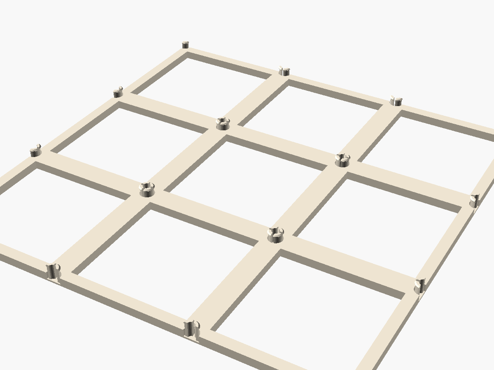
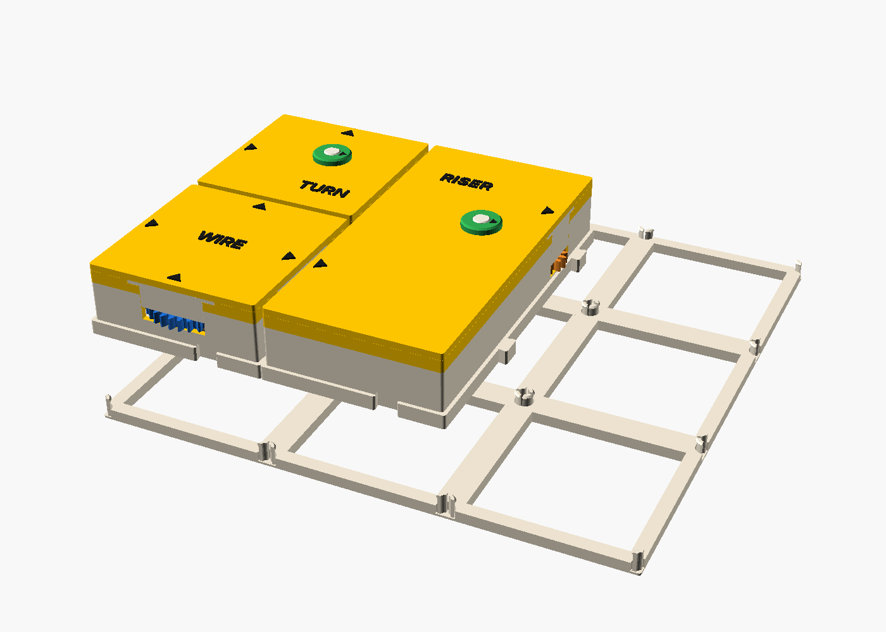
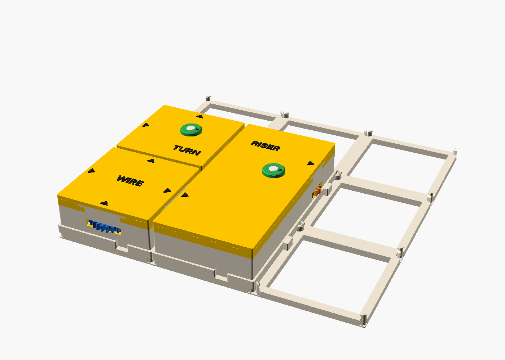
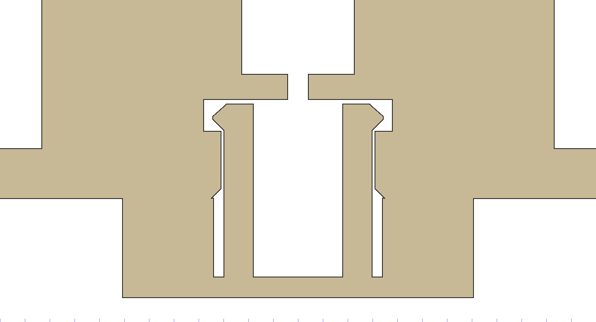
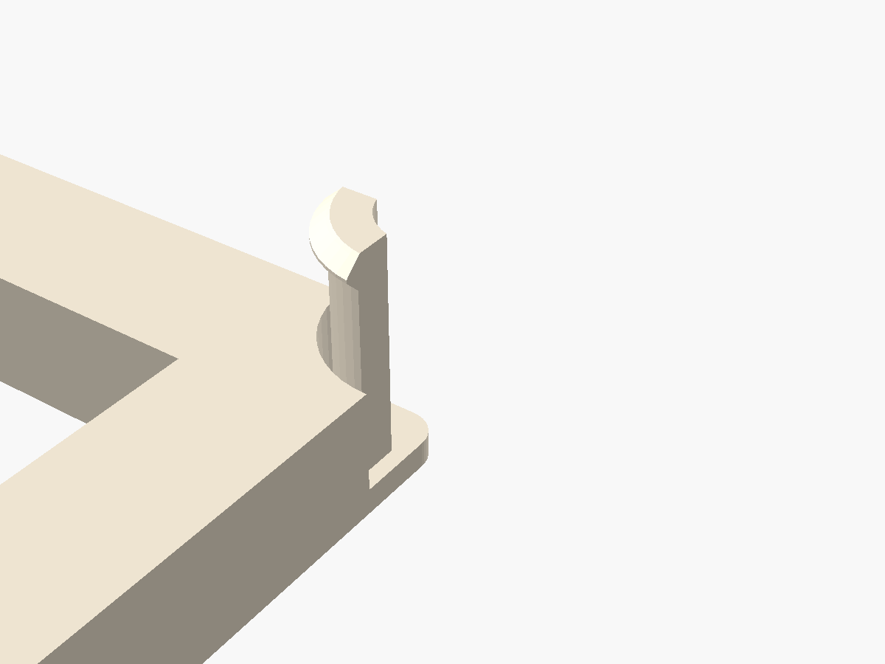

The dovetail keys stop a box sliding sideways, but any box lifts straight out. The deck is a printed base the boxes snap down onto, so a whole layout picks up and travels as one piece.
a base, not a box · no gears, no lid, no cells, no cost · bone · tiles 1×1, 2×2 and 3×3 exported

DECK is part of the box standard ("The deck"): every shell now has a socket under each grid node, cut by gbs_shell_geom(), so every box gets it with no change to its own description. Paul chose the deck over the other two locks (loose clips from below, twist keys on top), and it went into the standard without a test print first. The fit check has a new test (13 in tools/check_fit.sh): every box sits on a deck of its own size and touches no peg. Deck tiles are exported at 1×1, 2×2 and 3×3. Nothing is printed yet. Old shells still sit beside new ones; they just don't snap to a deck until they are reprinted.


Every box, whatever its size, has its corners on the 64 mm grid. A grid node, the corner of a cell, is where up to four boxes meet. A 1×2 box has two more nodes along its long sides, a 2×2 has one in the middle, and the 3×3 ORRERY has four inside. So the lock lives at the nodes, and one rule covers every box:
You press a box down onto the deck the same way you lower it beside its neighbors today. The fingers spring in through the socket's bore, and the barbs spring out above a ledge 2.7 mm up.
Pull firmly and the 45 degree backs of the barbs push the fingers in again, so boxes come off for a new layout. Nothing changes on the sides: a box with sockets still stands flat on a table.


| Peg | 6.0 mm across, four fingers 1.2 mm thick (three 0.4 mm perimeters), 1.0 mm slots on the grid lines, 3.8 mm tall above the deck |
|---|---|
| Barb | 0.45 mm proud, its top at 3.3 mm, 45 degrees under and over |
| Socket | bore 6.2 mm (0.1 clear), ledge at 2.7 mm, seat 7.6 mm to 4.0 mm, 0.4 mm chamfer at the mouth; 1.0 mm of plinth over it |
| Spring | the fingers stand in a pit 3.2 mm into the deck, so each is about 7 mm long; strain on the way in is about 1.5 %, inside PLA's limit for a snap used again and again |
| Deck | a rib 10 mm wide and 4 mm tall on every grid line (5 mm under each plinth), a 13 mm pad at each node, open windows in the cells |
A tile is any size up to 3×3 (192 mm, which fits the P1S plate with room). Its edge ribs are half width and its edge pegs keep only the fingers over the tile, so two tiles side by side make whole ribs and whole pegs. Tiles have no joint of their own: boxes dovetailed across a seam tie the two tiles together. A 3×3 tile is about 45 cm³ solid, much less at 15 % infill.
A node inside a box (2×2 and up) needs a boss on the floor to hold its socket: 10 mm across, from the floor to the plinth top (z 2 to 5), under the first gear layer. tools/lock_nodes.scad lists what stands near each inner node:
[-32, 3], which clears it.[32, 14].cells = [1, 1]) and one WIRE shell with sockets.lk_barb to 0.35; too weak, raise it to 0.55. PETG flexes better than PLA if the fingers crack.